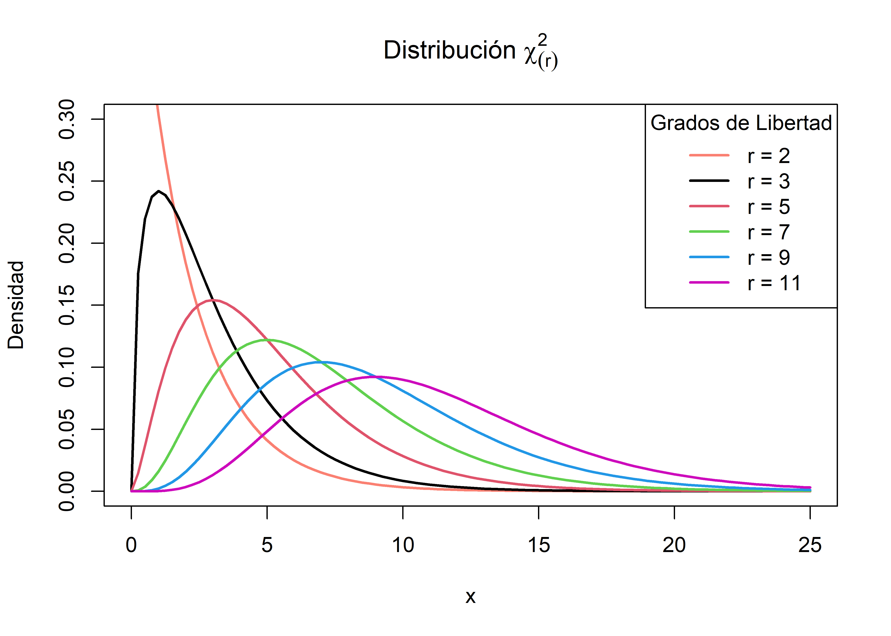

En el proceso de identificar y explicar las características esenciales que permiten describir el comportamiento de un fenómeno, nuestro objetivo es el de establecer de manera aproximada dicho comportamiento usando parte de toda la información relevante acerca del fenómeno.
Cuando se desea estimar un parámetro poblacional se puede presentar cualquiera de los próximos 3 casos:
Estimar una proporción
\[\hat{p}=\frac{X}{n}\] Estimar un promedio
\[\bar{X}=\sum_i^n\frac{x_i}{n}\] Estimar una varianza
\[S^2=\frac{\sum_i^n (x_i-\bar{X})^2}{n-1}\]
Estas características son únicas en cada caso. La idea es estimar o aproximar estos parámetros usando la información recolectada a partir de una muestra. Cada objeto o individuo seleccionado aporta información acerca de la característica que se quiere medir, la cual varía de individuo a individuo. Así, una muestra no es más que una colección de variables aleatorias. Si además, las mediciones son independientes, las variables involucradas también lo serán.
Una muestra aleatoria (m.a) de tamaño \(n\), es un conjunto de \(n\) variables aleatorias independientes e idénticamente distribuidas. Si \(X_1,\dots,X_n\) es una m.a, entonces
\[f(X_1,\dots,X_n)=\prod_i^n f_{X_i} (x_i)\] \[f_{X_i}(x_i)=f(x_i)\quad \forall_i=1,\dots,n\]
Un estadístico es entonces una función de una m.a. No todos los estadísticos que se definen a partir de una m.a. son de interés. La idea está en encontrar aquellos que permiten obtener mejores aproximaciones a los parámetros de interés. (Por ejemplo la media \(\mu\), la varianza \(\sigma^2\) o una proporción \(p\)).
Entonces se plantean las siguientes preguntas.
Sea \(X_1,\dots,X_n\) una muestra aleatoria de una distribución con media \(\mu\) y varianza \(\sigma^2\)
Sea \(\bar{X}=\sum_1^n \frac{X_i}{n}\), entonces \[\begin{align*} E[\bar{X}]&=E\left[\sum_1^n \frac{X_i}{n}\right]=\frac{1}{n}\sum_1^n E[X_i]=\frac{1}{n}\sum_1^n \mu=\frac{n\mu}{n}=\mu\\ Var[\bar{X}]&=Var\left[\sum_1^n \frac{X_i}{n}\right]=\frac{1}{n^2}\sum_1^n Var[X_i]=\frac{1}{n^2}\sum_1^n \sigma^2=\frac{n\sigma^2}{n^2}=\frac{\sigma^2}{n} \end{align*}\] Así, la distribución muestral de \(\bar{X}\) tiene media \(\mu\) y varianza \(\sigma^2/n\)
Aplicando la misma metodología se puede mostrar que la distribución muestral de la proporción tiene media \(p\) y varianza \(pq/n\).
Por otra parte, la distribución muestral de la varianza está dado por otra distribución llamada chi-cuadrado \((\chi^2)\).
La distribución de Pearson, llamada también ji cuadrada(o) o chi cuadrado(a) (\(\chi^2\)), es una distribución de probabilidad continua con un parámetro \(r\) que representa los grados de libertad de la variable aleatoria.
\[ f(x)= \begin{cases}\displaystyle \frac{1}{2^{r/2}\Gamma(r/2)}\,x^{(r/2) - 1} e^{-x/2}&\text{para }x>0,\\ 0&\text{en otro caso} \end{cases} \]

Suponga que \(X_1,\dots,X_n\) es una muestra aleatoria de una población con media \(\mu\) y varianza \(\sigma^2\). Sea \(\bar{X}\) la media muestral que depende de \(n\) entonces cuando \(n \rightarrow \infty\) se cumple que:
\[\Large \cfrac{\bar{X}-\mu}{\frac{\sigma}{\sqrt{n}}} \stackrel{aprox}{\underset{n \rightarrow \infty}{\widetilde{\quad\quad}}} N(0,1)\]
Entre mayor sea \(n\) mejor es la aproximación. Si la distribución de la muestra es simétrica y continua, los tamaños muestrales relativamente pequeños, permiten obtener buenas aproximaciones. Si la distribución es discreta, se requiere de tamaños muestrales grandes.
\[P(\bar{X}<a)=P\left(\frac{\bar{X}-\mu}{\sigma/\sqrt{n}}<\frac{\bar{X}-a}{\sigma/\sqrt{n}}\right) \approx P\left(Z<\frac{\bar{X}-a}{\sigma/\sqrt{n}}\right)\]
Si se desconoce el valor de \(\sigma^2\) y \(n\) es grande, se puede reemplazar \(\sigma^2\) por \(S^2\).
\[\Large \cfrac{\bar{X}-\mu}{\frac{S}{\sqrt{n}}} \stackrel{aprox}{\underset{n \rightarrow \infty}{\widetilde{\quad\quad}}} N(0,1)\]
El nivel total de colesterol en cierta población tiene una distribución aproximadamente normal, con una media de 200 mgl/100ml y una desviación estándar de 20 mg/100ml. Si se realizan 49 exámentes de manera aleatoria de esta pblación ¿Cuál es la probabilidad de que el nivel de colesterol promedio de esta muestra esté entre 198 y 203 mg/100ml? \[E[X_i]=200 \quad \text{y} \quad Var[X_i]=400\] Ahora, \[\begin{align*} P(198<\bar{X}<203)&=P\left(\frac{198-\mu}{\sigma/\sqrt{n}}<\frac{\bar{X}-\mu}{\sigma/\sqrt{n}}<\frac{203-\mu}{\sigma/\sqrt{n}}\right)\\\\ &=P\left(\frac{198-200}{20/\sqrt{49}}<\frac{\bar{X}-\mu}{\sigma/\sqrt{n}}<\frac{203-200}{20/\sqrt{49}}\right)\\\\ &\approx P(-0.7<Z<1.05)\\ &=\Phi(1.05)-\Phi(-0.7)\\ &=0.8531409 - 0.2419637\\ &=0.6111773 \end{align*}\]
Suponga que se realiza un estudio sobre el salario de los estudiantes de Nutrición y Dietética una vez finalizan su pregrado y se insertan en el mercado laboral. Para ello, se le pregunta a 15 egresados seleccionados de forma aleatoria y se les pregunta cuál es el salario que devengan actualmente, obteniendo los siguientes resultados en millones de pesos:
\[1.78\quad2.93\quad1.22\quad1.27\quad1.17\\1.03\quad1.24\quad2.07\quad2.04\quad1.28\\1.53\quad0.98\quad1.73\quad1.38\quad3.24\]
Basados en la información anterior, calcule la probabilidad de que la proporción de egresados que tienen un salario superior a 2 millones de pesos sea mayor al 40%.
Como no nos hablan de los salarios sino de la propocrión de aquellos que gananan más de 2 millones de pesos, entonces tenemos que contar cuántos ganan más de esa cantidad.
Menos de 2M 2M o más Total 11 4 15 Entonces la proporción de egresados que ganan más de dos millones es \(\hat{p}=4/15 = 0.26667\), entonces es posible calcular la probabilidad \(P(p>0.4)\) aplicando el teorema central del límite: \[\begin{align*} P(p>0.4) &= P(\hat{p}-p < 4/15-0.4)\\ &=P \left(\cfrac{\hat{p}-p}{\sqrt{\frac{p(1-p)}{n}}} < \cfrac{4/15-0.4}{\sqrt{\frac{(0.4)(0.6)}{15}}} \right)\\\\ &=P(Z < -1.054093)\\ &=P(Z > 1.054093)\\ &=0.1459203 \end{align*}\] Y por tanto, la probabilidad de la proporción de egresados de Nutrición que tienen un salario superior a 2 millones es del 14.59%.
Basados en la información de los salarios, calcule la probabilidad de que el salario promedio de todos los egresados de Nutrición sea a lo más de 1.8 millones de pesos, si se sabe, que los salarios se distribuyen normalmente con desviación estándar de 500 mil de pesos.
En este caso, estamos interesados en calcular la probabilidad de que la media poblacional del salario de los egresados, sea como máximo de 1.8 millones de pesos, esto es \[P(\mu \leq 1.8)\] Ahora, como sabemos que la distribución de los salarios de los egresados sigue una distribución normal, entonces el cálculo de probabilidad basado en la muestra aleatoria se calcula aplicanto el teorema central del límite. De los datos tenemos que \(\bar{X}=1.659333\) y \(\sigma=0.5\), así la probabilidad está dada por: \[\begin{align*} P(\mu \leq 1.8)&=P(−\mu \geq - 1.8)\\ &=P(\bar{X}−\mu \geq 1.659333−1.8)\\ &=P \left(\cfrac{\bar{X}-\mu}{\frac{\sigma}{\sqrt{n}}} \geq \cfrac{1.659333−1.8}{\frac{0.5}{\sqrt{15}}} \right)\\ &=P(Z \geq -1.089602)\\ &=P(Z \leq 1.089602)\\ &=0.8620557 \end{align*}\] Por lo tanto la probabilidad de que el salario promedio los egresados del programa de Nutrición y Dietética sea como máximo de 2 millones de pesos, es del 86.21%